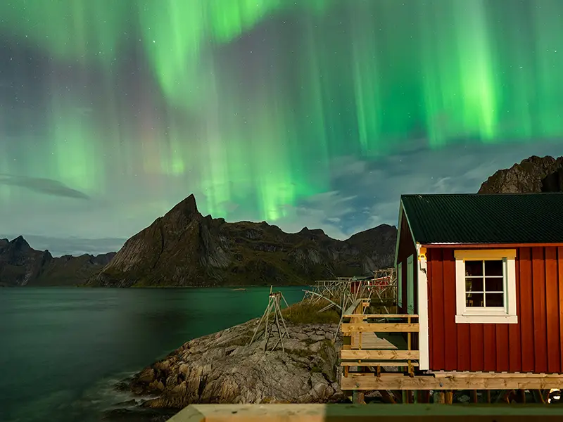
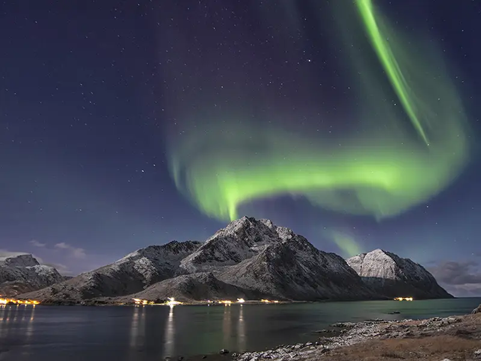
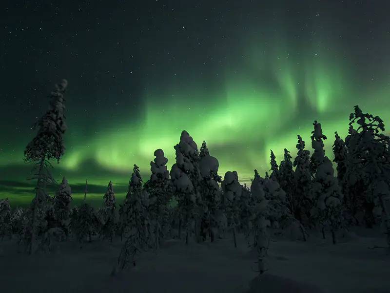
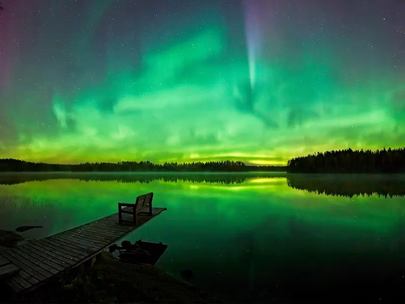

Where Do You Want to See the Northern Lights?
Choose a country to explore its main aurora destinations, compare Northern Lights tours and start planning your Arctic trip.

Norway
Tromsø, Alta, Lofoten and Svalbard — from small-group aurora chases to dramatic Arctic landscapes.
Explore Norway
Iceland
Reykjavík and Akureyri — combine Northern Lights hunting with waterfalls, glaciers and winter road trips.
Explore Iceland
Finland
Rovaniemi, Levi and Finnish Lapland — aurora chases, glass igloos and classic Arctic winter experiences.
Explore Finland
Sweden
Abisko and Kiruna — inland Arctic landscapes, dark skies and two of Swedish Lapland's main aurora bases.
Explore Sweden